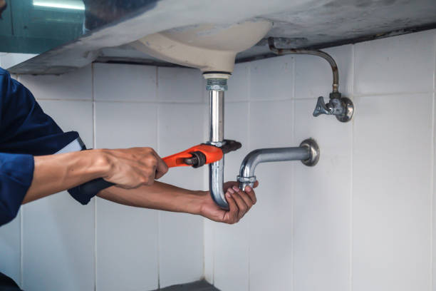
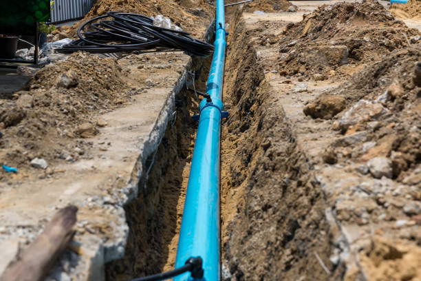
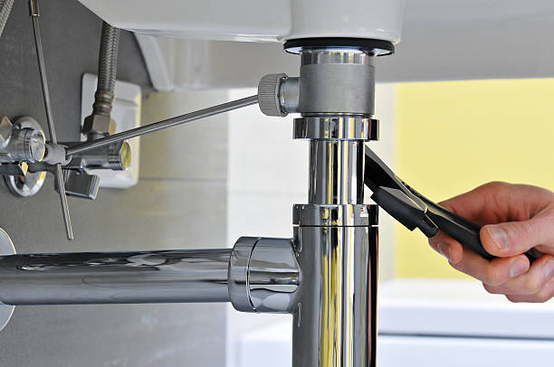
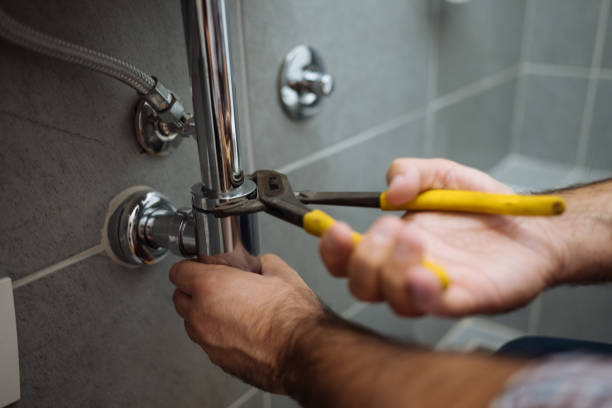

News
Customer Reviews and Testimonials for Frisco Plumbing Contractors
Top Plumbing Services Offered in Frisco
Awards and Recognition for Frisco Plumbing Companies
About Us
Frisco Plumbing Advice and Reviews
What is the Highest-Rated Plumbing Contractor in Frisco for Reliable Services?
Jun 07, 2024
Selecting the highest-rated plumbing contractor in Frisco for reliable services is a significant concern for homeowners and business owners who need quality plumbing solutions.. We will explore how to identify such a contractor and what makes them stand out, rather than pinpoint an individual company, as ratings are subject to change over time.
When looking for the highest-rated plumbing contractor in Frisco, residents often turn to online reviews and testimonials as their starting point.
What is Frisco's Top Choice for Professional Plumbing Contractors?
Jun 07, 2024
Title: Discovering Frisco's Top Choice for Professional Plumbing Contractors
In the bustling city of Frisco, Texas, homeowners and businesses alike face a myriad of challenges when it comes to maintaining their plumbing systems.. With a rapidly growing population and an ever-expanding urban landscape, the demand for reliable and professional plumbing services is at an all-time high.
What is the Best-Rated Emergency Plumbing Service Provider in Frisco?
Jun 07, 2024
When it comes to emergencies, particularly those of a plumbing nature, every second counts.. A burst pipe, an overflowing toilet, or a gas leak can rapidly escalate into catastrophic property damage and even pose safety hazards.
What is Frisco’s Most Trusted Plumbing Contractor for Residential Repairs?
Jun 07, 2024
When residents of Frisco, Texas, face a dripping faucet, a clogged drain, or a malfunctioning water heater, they seek the services of a reliable and skilled plumbing contractor.. In the vibrant community of Frisho—known for its bustling economy and family-friendly neighborhoods—homeowners prioritize trustworthiness and expertise when it comes to residential repairs.
What is the Leading Full-Service Plumbing Contractor in Frisco with Exceptional Reviews?
Jun 07, 2024
When it comes to plumbing needs, homeowners and businesses alike seek a service that is both reliable and reputable.. In Frisco, a city known for its thriving community and modern amenities, residents often look for a full-service plumbing contractor that stands out from the rest; one with exceptional reviews that speak to the quality of their workmanship, customer service, and professionalism.

How to Effortlessly Solve Your Plumbing Problems with Frisco's Top-Rated Experts
Jun 07, 2024
Title: The Seamless Solution to Plumbing Predicaments with Frisco's Finest
Introduction:
Plumbing issues can strike at any time, often catching homeowners off guard and leaving them with the daunting task of finding a quick and reliable fix.. From leaky faucets to clogged drains, the spectrum of possible problems is vast.
How to Enjoy Peace of Mind by Choosing the Best-Rated Plumbing Contractors in Frisco
Jun 07, 2024
Enjoying peace of mind is a state we all strive to attain, particularly when it comes to maintaining our homes.. One aspect of home care that often causes stress is plumbing.

Discover How to Protect Your Home with Frisco’s Most Trusted Plumbing Professionals
Jun 07, 2024
Title: Discover How to Protect Your Home with Frisco’s Most Trusted Plumbing Professionals
Your home is your sanctuary, a place where you find comfort and peace.. It's also a complex system of structures and utilities that require regular maintenance to ensure everything runs smoothly.
Learn How to Save Time and Money on Plumbing Services with Frisco's Elite Contractors
Jun 07, 2024
In the bustling city of Frisco, homeowners are constantly seeking ways to manage their busy lives while maintaining their homes efficiently and cost-effectively.. One area that often requires attention is plumbing.

Uncover the Secret to Hassle-Free Repairs with the Highest Rated Plumbers in Frisco
Jun 07, 2024
Uncovering the Secret to Hassle-Free Repairs with the Highest Rated Plumbers in Frisco: A Guide to Exceptional Service
In the bustling city of Frisco, Texas, homeowners and businesses alike understand the importance of maintaining their plumbing systems.. The inconvenience and disruption caused by leaks, clogged drains, or malfunctioning fixtures can be significant.
Reviews and Ratings of Top Plumbing Contractors in Frisco
Jun 07, 2024
When it comes to finding top plumbing contractors in Frisco, the process can be as winding and involved as the pipes that run beneath our homes.. However, with a vibrant community and an active online presence, Frisco residents have access to a wealth of reviews and ratings that can guide them toward making an informed decision when choosing a plumbing service provider.
In the heart of Texas, where the weather is as unpredictable as a leaky faucet, the importance of having a reliable plumber cannot be overstated.

Qualities That Make a Plumbing Contractor Best-Rated in Fricial
Jun 07, 2024
The quest for a best-rated plumbing contractor in the fictive town of Fricial is akin to finding a trustworthy guardian for one's home's vital systems.. Plumbing, an essential aspect of any household or commercial building, requires skilled hands and sharp minds to maintain and repair.
Award-Winning Plumbing Services in Frisco: Who Tops the List?
Jun 07, 2024
When it comes to award-winning plumbing services in Frisco, Texas, residents and businesses alike seek out the top-tier providers who not only offer exceptional workmanship but also embody customer service excellence.. In a booming city like Frisco, where the population is rapidly growing and infrastructures are constantly being developed, plumbing issues can arise at any moment, making reliable service providers crucial.
One name that consistently tops the list when discussing award-winning plumbing services in Frisco is "Frisco Elite Plumbing Co." (Note: This is a fictional company created for illustrative purposes).
Customer Testimonials and Success Stories from Frisco’s Best Plumbers
Jun 07, 2024
Customer Testimonials and Success Stories: An Ode to Frisco’s Best Plumbers
In the bustling city of Frisco, Texas, where the hum of daily life resonates with activity and progress, there exists a community cornerstone that often goes unsung—its plumbers.. These skilled professionals work tirelessly behind the scenes to ensure our homes and businesses function smoothly.
Comparing the Services of Best-Rated Plumbing Contractors in Frisco
Jun 07, 2024
When it comes to maintaining the comfort and functionality of your home, few services are as crucial as those provided by plumbing contractors.. In Frisco, a city known for its bustling communities and modern amenities, homeowners have the luxury of choosing from some of the best-rated plumbing contractors in the region.